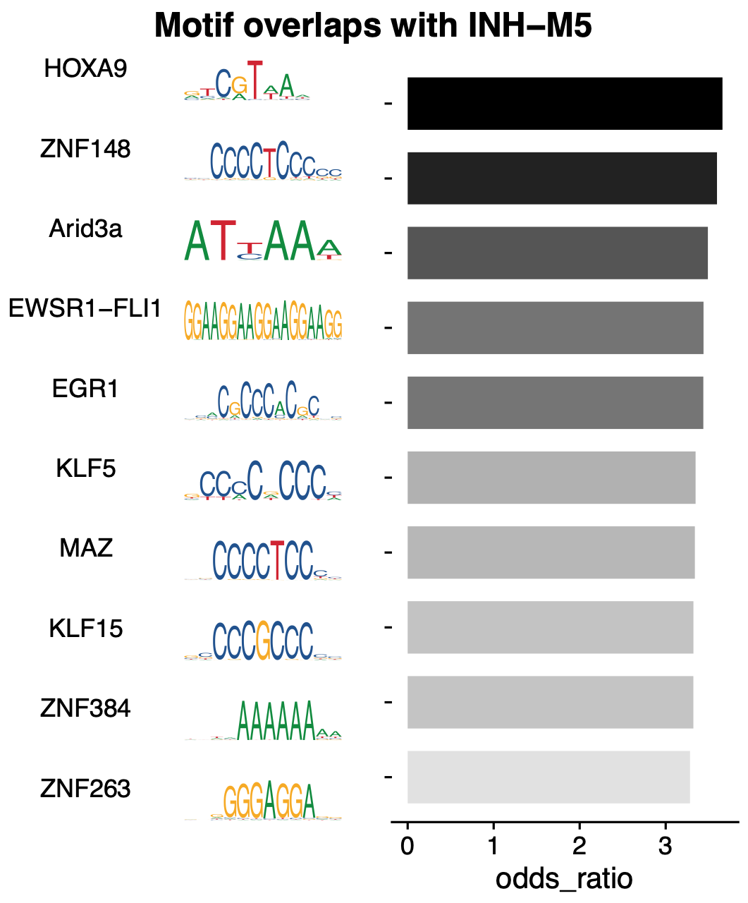
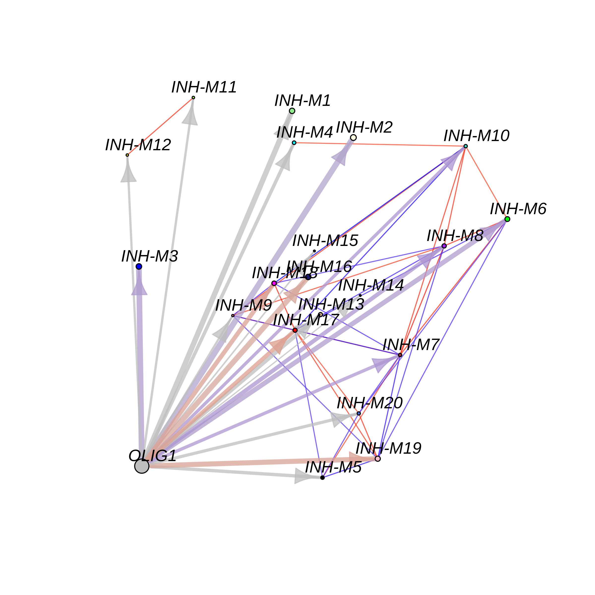

Motif Analysis
motif_analysis.RmdTutorial Under Construction
Load the snRNA-seq data and the required libraries:
# single-cell analysis package
library(Seurat)
# plotting and data science packages
library(tidyverse)
library(cowplot)
library(patchwork)
# co-expression network analysis packages:
library(WGCNA)
library(hdWGCNA)
# network analysis & visualization package:
library(igraph)
# packages for TF motif analysis
library(JASPAR2020)
library(motifmatchr)
library(TFBSTools)
library(EnsDb.Hsapiens.v86)
library(GenomicRanges)
# using the cowplot theme for ggplot
theme_set(theme_cowplot())
# set random seed for reproducibility
set.seed(12345)
# load the Zhou et al snRNA-seq dataset
seurat_ref <- readRDS('data/Zhou_control.rds')Run Motif scan:
# get the pfm from JASPAR2020 using TFBSTools
pfm_core <- TFBSTools::getMatrixSet(
x = JASPAR2020,
opts = list(collection = "CORE", tax_group = 'vertebrates', all_versions = FALSE)
)
# run the motif scan with these settings for the mouse dataset
seurat_obj <- MotifScan(
seurat_obj,
species_genome = 'hg38',
pfm = pfm_core,
EnsDb = EnsDb.Hsapiens.v86
)
dim(GetMotifMatrix(seurat_obj))
# TF target genes
target_genes <- GetMotifTargets(seurat_obj)
# check target genes for one TF:
head(target_genes$SOX9)Output
[1] "OR4F5" "TTLL10" "SDF4" "ATAD3C" "MIB2" "CDK11B"Overlap between TF target genes and co-expression modules
# overlap between modules & TF target genes:
seurat_obj<- OverlapModulesMotifs(seurat_obj)
# look at the overlap data
head(GetMotifOverlap(seurat_obj))Output
module tf color odds_ratio pval fdr
Arnt INH-M1 Arnt lightgreen 1.8100972 0.04229064 0.06409755
Ahr::Arnt INH-M1 Ahr::Arnt lightgreen 1.9306874 0.01521384 0.02637231
Ddit3::Cebpa INH-M1 Ddit3::Cebpa lightgreen 1.4769054 0.17180719 0.21395236
Mecom INH-M1 Mecom lightgreen 1.1494048 0.39598290 0.43952275
FOXF2 INH-M1 FOXF2 lightgreen 1.7265993 0.06967679 0.09851950
FOXD1 INH-M1 FOXD1 lightgreen 0.8656827 0.68554365 0.71222835
Significance Jaccard size_intersection
Arnt 0.002775575 14
Ahr::Arnt * 0.002818573 19
Ddit3::Cebpa 0.002379819 10
Mecom 0.001917546 10
FOXF2 0.002699663 12
FOXD1 0.001482800 5
# plot the top TFs overlapping with
MotifOverlapBarPlot(
seurat_obj,
#motif_font = 'xkcd_regular',
outdir = 'motifs/MotifOverlaps/',
plot_size=c(5,6)
)
Compute motif target gene expression score:
library(UCell)
seurat_obj <- MotifTargetScore(
seurat_obj,
method='UCell'
)Plot overlap between motif of interest and modules:
df <- GetMotifOverlap(seurat_obj)
cur_df <- df %>% subset(tf == 'SOX9')
plot_var <- 'odds_ratio'
p <- cur_df %>%
ggplot(aes(y=reorder(module, odds_ratio), x=odds_ratio)) +
geom_bar(stat='identity', fill=cur_df$color) +
geom_vline(xintercept = 1, linetype='dashed', color='gray') +
geom_text(aes(label=Significance), color='black', size=3.5, hjust='center') +
ylab('') +
xlab("Odds Ratio") +
ggtitle("SOX9 overlap") +
theme(
plot.title = element_text(hjust = 0.5)
)
png(paste0(fig_dir, 'Sox9_motif_overlap_or.png'), width=3, height=4, units='in', res=400)
p
dev.off()
Motif overlap network
ModuleTFNetwork(
seurat_obj,
edge.alpha=0.75,
cor_thresh = 0.75,
tf_name = "OLIG1",
tf_gene_name = "OLIG1",
tf_x = -7,
tf_y = -7
)